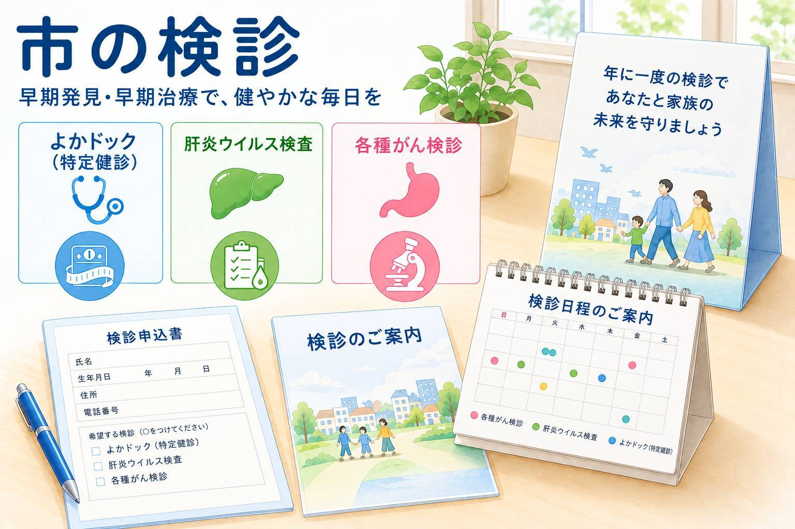

福岡市に住民票のある方を対象に、各種検診・検査の自己負担金の一部が福岡市により助成されます。当院では、以下の検診・検査を実施しています。ご希望の方はお電話でご予約のうえお越しください。
よかドック
抗体・リスク検査
胃がんリスク検査（ピロリ菌検査等）
胃癌を発見する検査ではなく、将来、胃癌になるリスクを判定する検査です。過去にピロリ菌検査を受けたことがないことが条件です。
- 対象者：今年度中に35歳・40歳になる方
- 料金：1,000円
がん検診
※料金免除の詳細は、下記よりご確認いただくか、当院までお問い合わせください。
健診で「要検査」などの指摘を受けた方は、こちらもご覧ください。